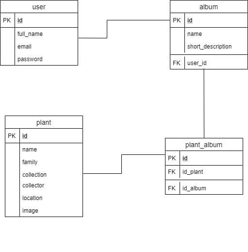
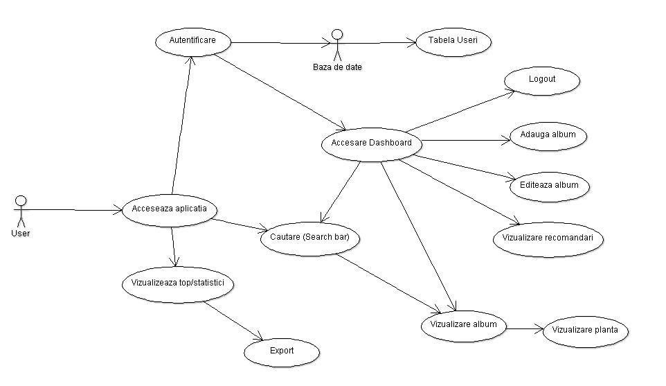

Planty is a Web platform for online herbariums. A user can create plant albums and look at other public thematic albums.
Moreover, users can look up plants using a search platform with multiple filters: plant name, collection, collector, location and family.
Users that create an account will also receive recommendations of albums based on the plants they searched for or added to their own albums.
2. Application Flow
The flow of the web application starts with the user entering the web application.
Using HTTP methods, we make calls to the server-side.
There, controllers handle the bussiness logic of the application, like logging, registering a new user, searching for a plant, generating recommendations.
The data used is provided by the Data Access Layer, which has access to a database and is composed of Models which represent the objects found in the tabels from the database.
Application Flow Diagram
3. Database
In this application, we make use of a database in order to store all the information so that the users can keep track of their albums.
The users table provides storage for all existing users on the platform.
The plant table is used to store all the plants along with their attributes.
The album table stores all the albums created by users or by the administrators.
The user_album table associates a user with the table they have created.
The plant_album table associates a plant with the albums that contain that plant.
3.1 Database schema

4. MVC Model
Model-View-Controller (MVC) is an arhitectural pattern that separates an application into three main logical components: the model, the view and the controller.
Each of these components are built to handle specific development aspects of an application.
Advantages include:
easier maintenance by keeping the data-manipulating logic separate
modularity, decoupled code (fewer dependencies)
modification not affecting the entire model
scalability
extensiblity
4.1 Model
Responsible for the business domain state knowledge. The model in our application wil consist of the database entities created.
4.2 View
Responsible for a presentation view of the business domain. It will be represented by html files for every page in the website.
4.3 Controller
Responsible for controlling the flow and state of the user input. Our application implements Javascript controllers, using the models and generating the views.
5. Use-Case Diagram

6. Use-Cases
Utilizatorul intra in aplicatie si creeaza un cont nou.
Utilizatorul intra in aplicatie si se logheaza cu contul sau.
Utilizatorul intra in aplicatie si vizualizeaza topuri si statistici.
Utilizatorul intra in aplicatie si exporteaza statisticile in format XML/PDF.
Utilizatorul intra in aplicatie si cauta o planta dupa mai multe criterii.
Utilizatorul intra in aplicatie si vizualizeaza un album.
Utilizatorul intra in aplicatie si vizualizeaza o planta alaturi de atributele sale.
Utilizatorul acceseaza dashboard-ul si vizualizeaza albumele sale.
Utilizatorul acceseaza dashboard-ul si vizualizeaza recomandarile generate.
Utilizatorul acceseaza dashboard-ul si adauga un album nou.
Utilizatorul acceseaza dashboard-ul si adauga o planta vizualizata la un album propriu.
Utilizatorul acceseaza dashboard-ul si sterge o planta dintr-un album.
8. Technologies
8.1 Node js - backend
The backend will be implemented in Node.js, as it is accessible and responsible for this type of application.
We will create a REST API and connect the presentation layer with the back-end.
8.2 MongoDB
This type of database is most suitable for the application as it is also resonable with this type of
stack. This SQL-based free database is powerful enough to deliver a fast and consistent bulk of information.
8.3 HMTL CSS Javascript
This is the main soul of our front-end part. This is understandable as we want to have full control of our front-end,
thus using a raw version of design modelling. This part is mostly complete, but it will also include some
AJAX as we want to keep our communication with our server smooth and clean.
8.4 Version control - Git
This is a common choice for this type of applications, thus we will try to make use of it fully.
GitHub makes it easy to organize our code using commits, that show us the most recent changes.